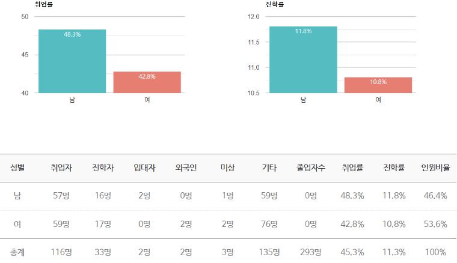
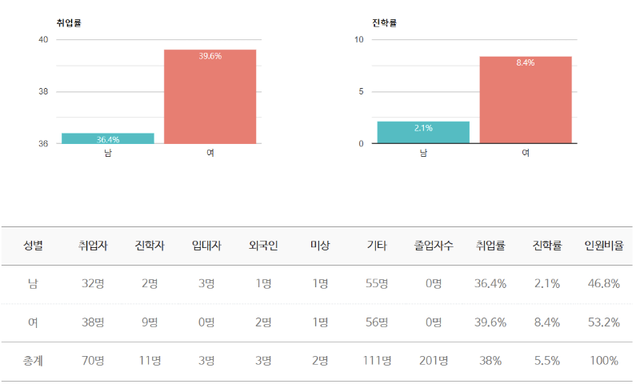

“맑은 콘텐츠로 세상을 바꾼다”
전공 : 언론정보학 전공, 공연영상학 전공
언론정보학 전공은 커뮤니케이션의 본질을 탐구하며, 저널리즘, 광고·홍보, 방송, 문화 등 다양한 분야를 다룹니다. 디지털 기술과 4차 산업혁명 시대에 요구되는 새로운 미디어와 커뮤니케이션 모델을 연구합니다. 학제 간 융합적 접근을 통해 기존 이론과 현재의 사회 문제를 분석하고 해결 방안을 모색합니다. 학생들은 미래의 미디어 콘텐츠와 커뮤니케이션 전략을 창의적으로 설계할 수 있는 능력을 배양합니다. 이를 통해 변화하는 사회와 기술 환경에서 필요한 실질적이고 전문적인 커뮤니케이션 역량을 갖춘 인재를 양성합니다.
미디어와 사회
언로너스(Alone? Us!)
‘혼자’가 아닌 ‘함께’ 언론 관련 공기업, 미디어 관련 기업의 시험 및 입사를 준비하는 학회 입니다.
컴케 MT
컴ON WEEK
언론계의 방송사 및 신문사
중앙일보, 조선일보, 국민일보, 한국경제신문, MBC, KBS, SBS, JTBC, CBS, CTS, CGNTV, 극동방송, 뉴스1, JTN 미디어 등
광고 기획사 및 제작사
제일기획, McCann Worldgroup Korea, MPR Vision, 미디컴, 원더월드 스튜디오, 공드오 션커뮤니케이션즈, 이노레드, 플라잉트리기획 등
NGO기관
기아대책, 월드비전, 컴패션, 탈북여성연대 등
기업 및 정부기관
LG전자, 삼성전자, 국민연금공단, 국회사무처, 현대카드, 현대건설, 한국마이크로소프트, SK텔레콤, 히타치케미컬, 티웨이항공, 지멘스, Kakao 등
국내 대학원
서울대 언론정보학과, 연세대 커뮤니케이션대학원, 서강대 신문방송학과
해외 대학원
New York University, London School of Economics & Political Science, Univ. of Alabama, Univ. of Missouri Univ. of Massachusetts 등
한동대학교 공연영상학 전공은 공연과 영상의 특성을 활용해 다양한 콘텐츠를 기획·제작하고 이를 통해 세상과 소통하는 방법을 배웁니다. 단순한 기술 습득을 넘어, 공연과 영상이 관객의 공감을 이끌어낼 수 있도록 창의적이고 감성적인 접근법을 탐구합니다. 이야기 구상, 기획, 제작, 연출, 관객과의 소통까지 다양한 과정을 통해 협력적이고 융합적인 작업을 경험합니다. 학생들은 공연과 영상 예술을 통해 세상과 연결되는 창의적이고 실질적인 역량을 키웁니다.
경제 45전공
미시경제학
거시경제학
경제수학
경영경제통계
계량경제학
CHERK (영화제작학회)
영화를 사랑하는 학생들이 함께 모여 영화에 대한 기본적이고 다양한 이론 공부 및 제 작에 직접 참여하는 학회입니다. 최종적으로는 자신이 직접 쓴 시나리오로 영화 제작 을 완성하는 것이 학회의 주요 목적이며 제작한 영화를 영화제 등에서 상영하기도 합 니다.
KHAZON (영상학회)
영상을 자유롭게 제작하고 공부하는 분위기를 만들어, 학회원들이 영상제작 과정을 쉽게 이해할 수 있도록 돕고 있습니다. 또한 영상제작에 있어 어떤 가치관을 콘텐츠에 담을 것인지에 대하여 고민하고 연구하는 학회이기도 합니다.
연극 또는 뮤지컬 교내 공연
HDFF한동영화제
젊은연극제 참여
방학중 대규모 단편영화 프로젝트 워크샵
방송사
KBS, MBC, SBS, 에스비에스홀딩스, JTN 미디어 등
공연/영상/기획사
JYP엔터테인먼트, 로드픽쳐스, CJ E&M, PBC프로덕션, 극단미추, 나인후르츠미디어, 드림빌엔 터테인먼트, 메가박스, 한국연극협회, 한국세라프, 미디컴, 규장문화사, 제일기획, 원더월드 스튜 디오 등
언론정보학
공연영상학
